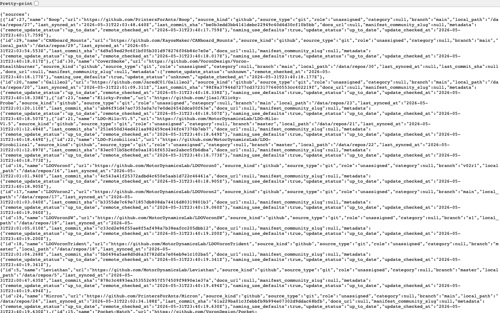
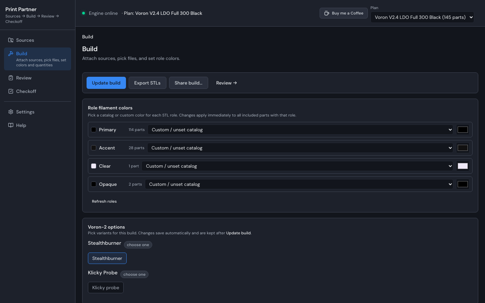
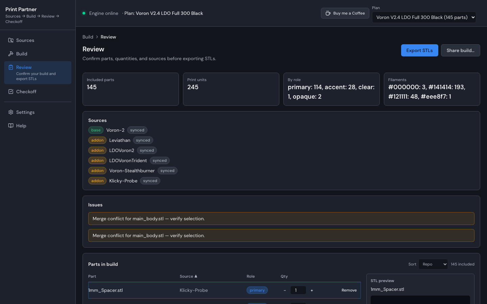
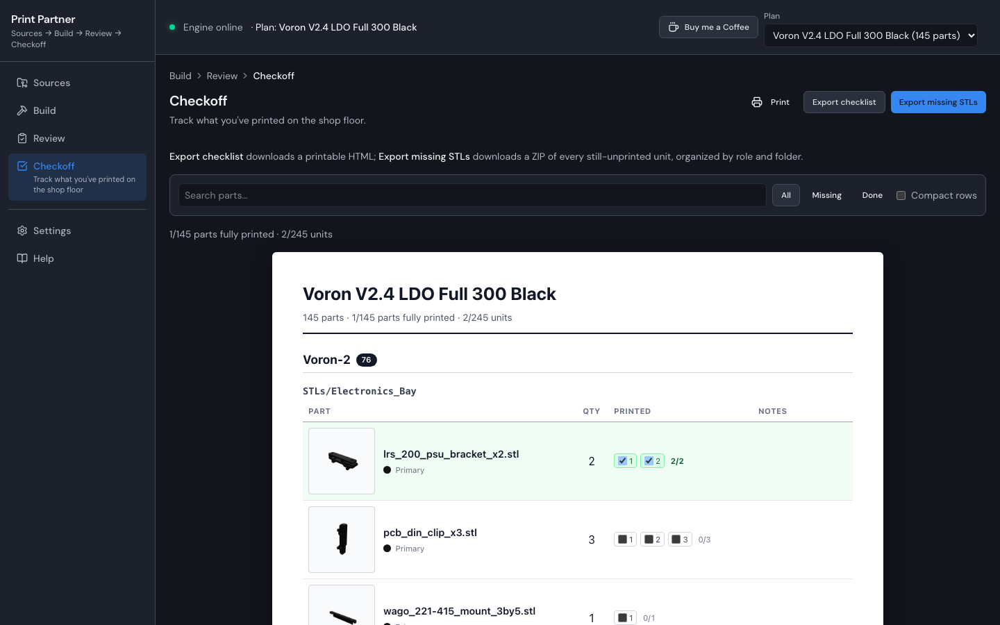

Self-hostable web workflow for layered STL kits — Sources through Checkoff.
Print Partner runs in your browser and helps you sync GitHub or local repos, merge base and add-on layers, assign role filament colors, export STLs by role and folder, and track what you have already printed. Deploy with Docker on one port — data stays in a local volume or directory you control. No cloud account required for self-host.
stl-missing/ folder.Sync repos → compose build → validate & export → track prints
README (screenshots and feature details) · Architecture




Self-host with Docker Compose:
git clone https://github.com/poitee/PrintPartnerPartner.git
cd PrintPartnerPartner
docker compose up --buildThen open http://localhost:8080.
View on GitHubPrint Partner is open source. If it saves you time on a kit build, Buy me a Coffee on Ko-fi helps fund development. Tips are voluntary and do not grant commercial license rights.
Licensed under the Print Partner Non-Commercial Software License. Commercial print farms may use the app internally; see LICENSE-SUMMARY.md and COMMERCIAL.md. Inspired by Annex Engineering workflow conventions — see ATTRIBUTION.md.